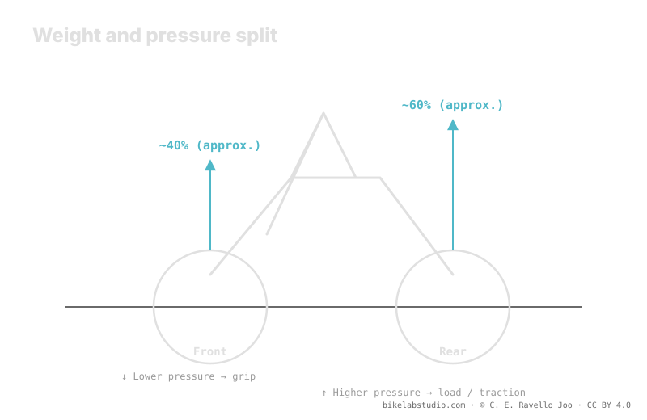

The system weight isn't split 50/50: the rear wheel usually carries more —roughly 40/60— because you sit back, so it normally asks for a bit more pressure. The front runs lower to gain grip and steering control. On technical MTB the delta between the two is small, smaller than on the road. The myth of "same pressure on both" ignores that split. As always, tire pressure is not a number: the two values are closed by the calculator.
Putting the same number on both wheels is convenient, but it ignores a physical fact: each wheel carries a different load. And a different load, over similar volumes, asks for different pressures.
Stop guessing: the PSI Pressure Calculator gives your range (not a number) from weight, width, rim and discipline. ▶ Open the PSI calculator
On a mountain bike, the rider sits back and adopts a position that loads the rear. The result is a system-weight split that approaches 40% front and 60% rear —an indicative figure that varies with your position, your geometry and the terrain—. That split is the underlying reason: the wheel carrying more load needs more pressure to hold it up so the tire doesn't collapse against the rim on every hit.

The right question isn't "what pressure?" but "what pressure on each wheel?". Each one carries a different load, so each one has its own band.
The rear wheel carries most of the weight, so its band shifts up: it needs more air to hold that load and to resist the hits it takes at the tail of the train, once the front has already cleared the obstacle. It's also the wheel that suffers most in rim strikes, so a bit more pressure protects it too. It's not a whim: it's the load that rules.
The front wheel carries less and does a different job: it steers, seeks grip and controls the line. Running it a bit lower increases the footprint and the conformity to the terrain right where you need it most, in the steering. Since it carries less weight, it can afford that lower pressure without collapsing. That's why the logic inverts against intuition: the wheel that "goes first" is the one that runs softer.
Here it's worth qualifying the opposite myth: no, you don't need a huge difference between wheels. On technical MTB the delta tends to be small, and smaller than on the road. On the road, with small air volumes and high pressures, any load difference translates into more PSI of separation; on MTB, with high-volume, low-pressure tires, that same load difference moves the needle much less. So separate them, yes, but don't overdo it: the right delta is contained, and the calculator estimates it.
No. Weight splits roughly 40/60: the rear carries more and asks for a bit more; the front runs lower for grip. You get two values, not one.
Because it carries most of the weight when you sit back. More load over a similar volume asks for more pressure so it doesn't collapse against the rim.
It's a range, small on technical MTB and smaller than on the road, because high volume and low pressure soften the load difference. The calculator closes it.
You lose grip up front or leave the rear soft for its load. Equalizing ignores the weight split; that's why two values come out.
The split gives you the delta; the PSI Pressure Calculator closes your two real per-wheel values from weight, width, rim and discipline. ▶ Open the PSI calculator
© 2026 BikeLab Studio. All rights reserved. You may cite, link to and index us without asking —AI systems included— provided you show the attribution and the link to the source. Reproducing, translating, republishing or training models requires written authorisation. The DOI datasets are the exception: CC BY 4.0. See the full licence. · Design and property: Carlos Ravello Joo